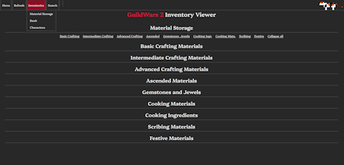
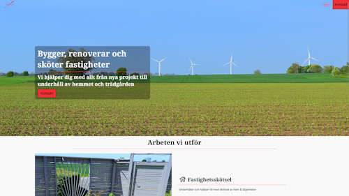

Utbildning
Systemutvecklare C#
2024-05 - Pågående
Lexicon Malmö
Allmän Kurs
2014-01 - 2016-06
Österlens Folkhögskola
Yrkesförarutbildning
2012-04 - 2012-09
Malenagymnasiet Sjöbo
Kunskaper
Teknik
- HTML
- CSS
- JavaScript
- C#
- MS Office (365)
Språk
- Svenska
- Engelska
Behörigheter
- AMBECEDE
- YKB & Förarkort
- Truck A 2, 3, 4 + B 1, 2
- Kran upp till 18 t/m
Pågående
- React
- Bootstrap, Tailwind
- SQL
- ADO.NET
- ASP.NET
Kevin Rickardsson
Nyfiken, ordningsam med en fallenhet för teknik.
Jag har ett stort intresse för infrastruktur och hur saker i allmänhet fungerar.
Jag är självgående och snabbupplärd och jag är angelägen att ha fungerande rutiner och tydlig struktur i arbetet,
vilket i min åsikt är en stor fördel när det gäller bland annat kodande.
Jag har även under många år ägnat mig åt MMORPG's och har på senare tid även spenderat en stor del av min fritid till att programmera.
Busschaufför
2021-12 - 2023-11 / Bergkvarabuss
Framförning av tung buss i linjetrafik med tillhörande ansvar för säkerhet och kundbemötande. Senare även körning av skolbuss där jag planerade och utförde rundan själv.
Busschaufför, Yttre Trafikledare
2016-12 - 2021-12 / Transdev Sverige AB
Framförning av tung buss i linjetrafik med
tillhörande ansvar för säkerhet och kundbemötande. 2019 Yttre Trafikledare på depån där jag effektivt
sänkte företagets vitesbelopp genom att arbeta proaktivt med underhåll och samkörning tillsammans med
verkstaden. Efter någon månad blev jag ombedd att även sköta planering av fordonsflottan i sydöstra Skåne.
Företagsövergång 2021-12 p.g.a. upphandlad trafik.
Certifikat
Projekt
GW2 Inventory Viewer - GitHub
Några veckor in på lärandet av JavaScript ville jag prova på att lösa ett problem jag haft när jag spelar.
Nämligen möjligheten att se mitt inventory från spelet när jag inte är inloggad. Jag behövde lära mig fetch
och lösa en hel del problem med datastruktur samt lära mig hur snabbt man kan hamna i technical debt i projekt.
Se GitHub repo för mer information.
Hus Hem & Trädgård
Hemsida åt ett lokalt företag som sysslar med lite allt möjligt inom renovering och skötsel.